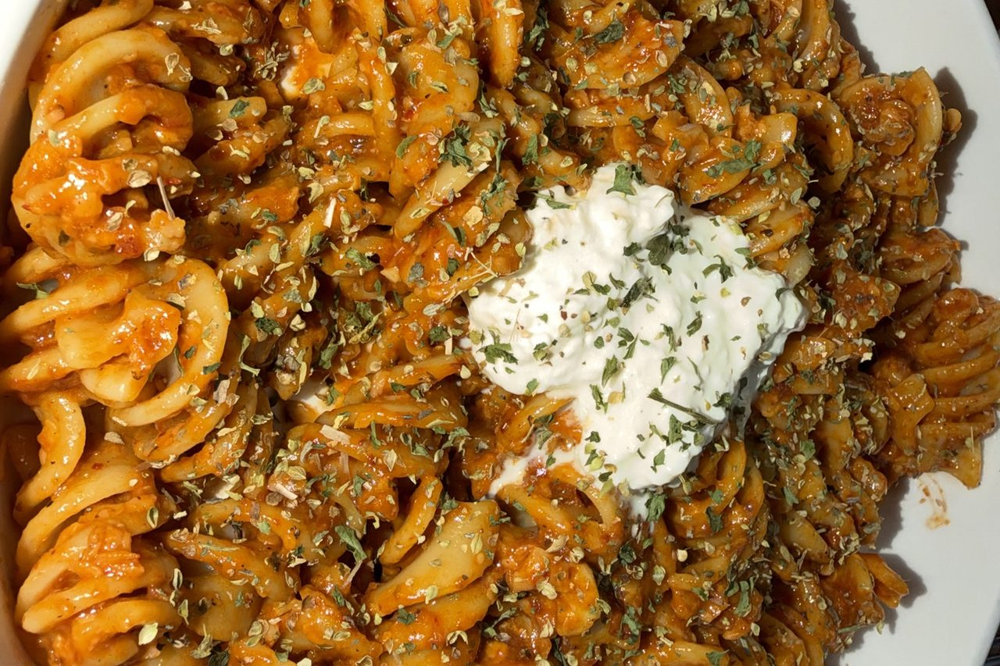

Chipotle Tomato Soup Pasta with Burrata
Fusilli gigante in a smoky, properly spicy sauce made by blending Kirkland tomato basil soup with chipotles in adobo, poured over a whole head of toasted garlic. Costco chipotle chicken, a lot of parmesan, and a scoop of burrata on top. No ragu patience required.
Italian · Mexican · Pasta · Quick · Dinner · Comfort Food

703kcal
32gprotein
Makes 3 servings. Whole batch: 2110 kcal, 97g protein.
Ingredients
Steps
- Boil the pasta in well-salted water. Save a mug of the pasta water before draining.
- Blend the soup, chipotle peppers, adobo sauce and a splash of pasta water with a stick blender until smooth.
- Toast the garlic in the olive oil over medium heat until golden and fragrant.
- Pour the blended sauce over the garlic and simmer for a few minutes so it thickens slightly.
- Add the chicken to warm through, then the drained pasta. Toss until everything is coated.
- Grate in the parmesan while it simmers and stir until it melts into the sauce. Loosen with more pasta water if it tightens up.
- Taste before salting. The soup, pasta water and parmesan carry almost all the salt it needs.
- Plate, add a scoop of burrata, shake over dried oregano and parsley, and hit it with finishing salt.
Two full peppers makes it genuinely spicy; start with one pepper and a spoon of sauce for a milder pan. The soup does the work of a long-simmered sauce, since it already has body, cream and basil in it. Macros are estimates from eyeballed amounts: pasta ~675, soup ~350, chicken ~300, burrata ~300 (3 scoops), olive oil ~240, parmesan ~160, garlic and chipotles ~85. Whole pan is roughly 108g fat and 180g carbs. More chicken is the easy way to push the protein up.